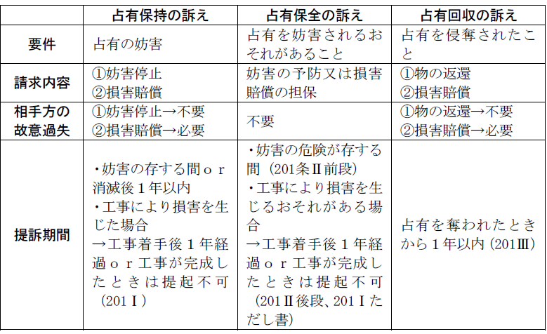
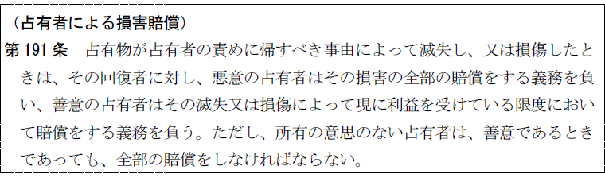
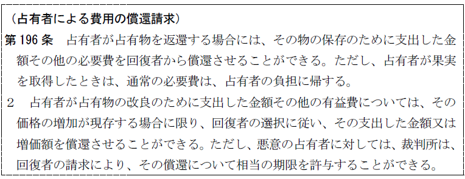

第２編 物権
第２章 占有権
第１節 総説
占有：自己のためにする意思をもって物を所持するという事実的支配状態
1. 所持
：物が、社会観念上その人の事実的支配に属すると認められる客観的関係
2. 占有
：自己のためにする意思をもって物を所持するという事実的支配状態（占有権の基礎となる事実）
3. 占有権
：占有を法律要件として成立する物権
4. 占有すべき権利（本権・占有をすることができる権利）
：所有権･賃借権･質権等、占有することを法律上正当化する権利
第２節 占有の成立要件
所持：物が社会観念上その人の事実的支配に属すると認められる客観的関係
1. 物を物理的に把握していることは必要でない。
2. 他人を介してもよい。
(1) 代理人による占有
代理人、本人共に所持が認められる。
(2) 占有補助者・占有機関による場合
本人にのみ所持があり、占有補助者・占有機関は所持者でない。それゆえ、占有補助者・占有機関には占有訴権はない。
ex. 法人の代表者（法人が直接占有者）、同居の家族、他人の使用人として家屋に居住する者
他人の使用人として家屋に居住するにすぎない者に対しては、特段の事情のないかぎり、その不法占有を理由として家屋の明渡しを請求することはできない（最判昭35.4.7）。使用人は、占有補助者に過ぎず、その占有は雇主の占有の範囲内で行われているものであり、独立の占有をなすものではないからである。
自己のためにする意思：所持による事実上の利益を自己に帰属させようとする意思
1. 所持を生じさせた原因たる事実（占有の権原の性質）から純客観的に決する。
ex. 所有権譲受人、盗人、地上権者、質権者、留置権者、賃借人、使用借人には、自己のためにする意思があるとされる。
2. 潜在的・一般的に存在すれば足りる。
ex. 郵便箱に投函された手紙
3. 自己の責任において物を所持する者は、有償・無償を問わず、自己のためにする意思がある。
ex. 倉庫業者、受寄者、受任者、請負人、運送人、破産管財人、財産管理人、遺失物拾得者
未成年者の財産を管理している親権者は、子のためにする意思を有すると同時に、自己のためにする意思をもって所持するもので、占有権を有する。
4. 占有取得の要件であり継続の要件ではない。
5. 意思無能力者は所持を有するが、占有の意思を有しない。よって、占有を取得しない。法定代理人を通じて占有する。
第３節 占有の種類
1. 意義
自己占有：自らが直接に占有すること
代理占有：他人の所持を介して占有すること（間接占有）
2. 代理占有の要件
①占有代理人が所持を有すること
②占有代理人が本人のためにする意思を有すること
③本人・占有代理人間に占有代理関係の存在すること
3. 代理占有の効果
①本人が占有権を取得する。
②占有の善意・悪意、侵奪の有無等は占有代理人につき決する。
ただし、占有代理人が善意でも、本人が悪意のときは、本人につき決する（101条３項の趣旨を類推）。
1. 意義
(1) 自主占有：所有の意思、すなわち、物について所有者と同様な支配をもってする占有
ex. 買主、盗人
所有権を有することも、また所有者であると信ずることも必要ではない。
所有の意思とは所有者として占有する意思をいい、たとえば、売買契約に約定期限までに売買代金を支払わなければ契約が解除されたものとする旨の解除条件が付いており、その解除条件が成就しても、所有の意思を失うわけではない（最判昭60.3.28）。
(2) 他主占有：自主占有以外の占有、すなわち、他人の所有権を認めて占有する者の占有
ex. 賃借人、受寄者、質権者
2. 区別の実益
取得時効（162条以下）、無主物先占（239条）、占有者の責任（191条ただし書）等で、自主占有か他主占有かにより効果が異なる。
3. 区別の基準
区別は、「所有の意思」の有無による。
その｢所有の意思｣の有無は、占有取得の原因たる事実＝権原の客観的性質によって決定される。
4. 他主占有が自主占有に転換する条件（185条）
①他主占有者が自己に占有をさせた者に対して所有の意思があることを表示すること、又は、②新たな権原により更に所有の意思をもって占有を始めることである。
本権なくしてなされる占有のみに関する区別である。
1. 意義
善意占有：本権がないのに、あると誤信してする占有
悪意占有：本権のないことを知り、又は、本権の有無に疑いをもってする占有
2. 区別の実益
取得時効（162条以下）、果実の取得（189条、190条）、占有者の責任（191条）、費用償還請求権（196条）、即時取得（192条）で善意占有か悪意占有かにより効果が異なる。
3. 善意占有は推定される（186条１項）。
1. 意義
過失ある占有：善意占有のうち、本権があると誤信することについて過失がある場合
過失なき占有：善意占有のうち、本権があると誤信することについて過失がない場合
2. 区別の実益
取得時効（162条以下）、即時取得（192条）で過失ある占有か、過失なき占有かにより効果が異なる。
3. 善意占有者の無過失は推定されない（186条１項参照）。しかし、即時取得（192条）の場合、前主の占有が188条により本権の推定を受けるので、無過失も推定される（最判昭41.６.９）。
第４節 占有権の取得
Ⅰ 占有権の原始取得
占有権は占有という事実を法律要件として生ずる法律効果であるから、「占有」が原始取得されるときは、｢占有権｣も原始取得される。
Ⅱ 占有権の承継取得
1. 総説
占有権の承継にも、特定承継と包括承継がある。
占有の移転と共に占有権も移転する。
被相続人が死亡して相続が開始するときは、特別の事情がない限り、従前その占有に属したものは、当然相続人の占有に移る（相続による占有の承継。最判昭37.５.18）。
共同相続の場合、占有権も共同相続されるのが原則であるが、共同相続人の一人が単独に相続したものと信じて疑わず、所有者として行動してきた等の事情のある場合には、その相続の時から自主占有を取得する（最判昭47.9.8）。つまり、このような場合には、共同相続人の一人が、単独所有者としての所有の意思をもってする占有を取得する。
2. 占有権の相続（包括承継）
(1) 占有権の相続性
被相続人の占有下にあった物に対して、相続人が所持ないし管理しているか否か、あるいは相続の開始を知っているか否かに関わりなく、原則として占有（権）は相続によって承継される。
(2) 占有の二面的性格
占有権の相続性を認めると、さらに相続開始とともに、又は相続開始後に、相続人が相続財産を所持するに至ったときは、相続財産上の相続人の占有権は、普通の占有権の性格をも有することになり、二面的性格を帯びる。そこで、相続人は自己の占有のみの主張が可能かが問題となる。
→ 相続人は187条の「承継人」に当たる（最判昭37.５.18）。
(3) 相続は 185条の「新たな権原」に当たるか。
例えば、賃借人の占有は他主占有であるから、いくら継続して占有しても賃借物の所有権を時効取得することはない（162条）。では、賃借人を相続した者は、自己の所有物だと思って継続して占有しても、時効取得しないであろうか。相続が185条の「新たな権原」に当たるかが問題となる。
→ 相続人が現実の占有開始の時点で所有の意思を有していたことが客観的に明らかであれば、185条の「新たな権原」に当たる（最判昭46.11.30・通説。判例は相続即新たな権原といっていない点に注意）。
1. 承継人
承継人は、選択により、自己の占有のみを主張し、又は前の占有者の占有を併せて主張できる（187条１項）。
前の占有者とは現占有者に先立つすべての前の占有者をさす。特定の前の占有者以下の前の占有者のみの占有を併せて主張もできる。
2. 前の占有者の占有をも主張するとき、その瑕疵も承継する（187条２項）。
善意占有を承継した者が承継のとき悪意であっても、前の占有者の占有を併せて主張するときには、その占有は善意占有である（最判昭53.３.６）。
3. 187条の適用範囲
特定承継だけでなく包括承継（相続）にも適用される（最判昭37.５.18）。
第５節 占有権の効力
占有権の基盤は｢占有｣という事実的支配状態にあることから、その保護及び効力も、事実的支配を尊重するものとなっている。民法は、占有権の効力として以下のようなものを認めている。
①占有そのものを保護する効力（占有訴権、197条～202条）
②本権公示的効力－占有の公示（178条）、即時取得（192条）
③本権の推定（188条）
④本権取得的効力－無主物先占（239条）、取得時効（162条以下）等
このほかに、「占有権の効力」とはいえないが、⑤権原のない不法占有者の返還をめぐる法律関係の清算（189条～191条）についてもここで論ずる。
1. 占有訴権の意義
(1) 意義
：物の占有者がその物の占有を妨害されたときは、その占有が正当な権利に基づくものか否かにかかわらず、妨害の除去を請求できるとする権利
(2) 性質
(a) 内容
占有権の侵害を排斥して完全な占有状態を回復する権利であり、一種の物権的請求権である。
相手方の故意・過失は問わない。
(b) 損害賠償請求権
占有訴権の内容として、損害賠償の請求を認めているが、性質上は物権的請求権ではなく、不法行為に基づく債権的請求権であるから、その要件及び効果も不法行為の規定に従う。よって、侵害者の故意・過失を要する。
2. 占有訴権の当事者
(1) 原告－占有者
①自己占有者、代理人による占有者
②占有代理人
以上の者は、権原の有無、占有者の善意・悪意を問わず自己の名において提起できる（判例）。占有補助者（占有機関）は占有訴権を有しない。
(2) 被告（相手方）－占有の侵害者、又は侵害をするおそれのある者
損害賠償請求の相手は、自ら故意・過失によって損害を生じさせた者及びその包括承継人である。本権の存否、故意・過失の有無を問わない。占有補助者も被告となれる。
3. 占有訴権の種類
占有訴権には、①占有保持の訴え（198条）、②占有保全の訴え（199条）、③占有回収の訴え（200条）がある。
(1) 占有保持の訴え（198条）
(a) 要件
ⅰ 占有の妨害
妨害とは占有状態に対する部分的な侵害であって、占有者がなお占有を保持する場合をいう。
ⅱ 妨害者の故意・過失は必要か。
① 妨害の停止の請求 → 不要
② 損害賠償の請求 → 必要
(b) 内容－妨害の停止及び損害の賠償
ⅰ 妨害の停止
：妨害者の費用をもって妨害の停止に必要な行為をすること（大判大５.７.22）
ⅱ 損害の賠償
この訴えにより賠償の対象となるのは、原状が回復するまでの間占有に支障をきたしたために生じた損害である。原状回復に要する費用の賠償ではない（大判大５.７.22）。
(c) 訴えの提起期間
妨害の存する間又はその消滅した後１年以内。ただし、工事により占有物に損害を生じた場合は、工事に着手した時から１年を経過し、又は工事が完成したときは提起できない（201条１項）。
(2) 占有保全の訴え（199条）
(a) 要件－占有を妨害されるおそれがあること
社会観念に従い、客観的に判定する。
(b) 内容－妨害の予防又は損害賠償の担保
妨害予防請求と損害賠償担保請求とは選択的に請求できるだけである。
ⅰ 妨害の予防
相手方の費用をもって将来のため適当な処分をすることを請求できる。
ⅱ 損害賠償の担保
相手方の故意・過失を要しない。将来の損害発生に備えるものである。
ただし、損害が現実化したとき、損害賠償請求には相手方の故意・過失が必要である。
(c) 訴えの提起期間
妨害の危険が存する間（201条２項前段）。もっとも、工事により損害を生じるおそれがある場合は、工事に着手した時から１年を経過し、又は工事が完成したときは提起できない（201条２項後段、１項ただし書）。
(3) 占有回収の訴え（200条）
(a) 要件－「占有を奪われたとき」＝意思に基づかないで所持を奪われること
ⅰ 遺失、詐取は、侵奪に当たらない（物権的請求権とは異なる）。
ⅱ 初めは占有者の意思に基づいて生じた状態が、後日意思に反するようになった場合、占有回収の訴えは認められない。
ex. 賃借権消滅後の占有
ⅲ 代理占有の場合、本人が侵奪されたか否かは、占有代理人について判断する。
占有代理人の意思に基づくときは本人の意思に反しても侵奪とならない。
(b) 請求権者－侵奪された者
ⅰ 本権の存否は問わない。
ⅱ 占有代理人が侵奪された場合、本人、代理人ともに請求できる。
(c) 相手方
ⅰ 占有の侵奪者、及びその包括承継人
侵奪者が本権者であっても被告適格を有する（交互侵奪の問題、大判大13.５.22）。
ⅱ 悪意の特定承継人
善意の特定承継人には行使できない（200条２項）。物権的請求権と異なる。
いったん善意の特定承継人の占有に帰したならば、その後の特定承継人が悪意であってもこれを相手に占有回収の訴えを起こすことはできない（大判昭13.12.26、絶対的構成）。
(d) 内容
ⅰ 物の返還
ⅱ 損害賠償＝占有を奪われたことによる損害
(e) 訴えの提起期間
占有を奪われたときから１年以内（201条３項）
4. 占有訴権と本権の訴えとの関係
Ｑ 占有の訴えにおいて、本権を理由とする抗弁が原則として提出できないことは、202条２項から明らかである。では、本権に基づく反訴を提起することはできるか。
→ 肯定（最判昭40.３.４・多数説）
【まとめ 占有訴権】

動産における本権の公示（178条）、即時取得（192条）
1. 意義
占有者が占有物について行使する権利は、適法に有するものと推定する（188条）。
権利推定の趣旨は、占有者は大多数の場合においては、本権者であるが、権利者が必ずしもその証明方法を他に十分持たないため、権利者と主張する者からいたずらに訴訟を仕掛けられてわずらわされることを防ぎ、進んでその権利行使の妨害を除くことを容易にする点にある。
2. 推定される権利－占有物について行使する権利
占有することを正当とする権利であれば、物権、債権を問わない。
188条は、占有物上に行使する権利を適法に有することの推定を認める規定である。
186条は、自主占有の推定を認める規定である。
3. 所有者から権利を取得したとして占有する者は、その所有者に対しては188条の推定を援用することはできない。
188条の推定は、権利の存在ないし帰属について適用されるものであって、権利変動（所有権の取得や地上権・賃借権の設定など）については及ばない。
4. 登記されている不動産では、登記の推定力が占有の推定力に優先する（最判昭34.１.８）。
占有権を本権に昇格させる効力
無主物先占（239条１項）、家畜以外の動物の取得（195条）、取得時効（162条以下）等
1. 果実をめぐる法律関係
(1) 善意占有者の果実収取権（189条）
善意の占有者は、占有物から生ずる果実を取得する（189条）。
果実収取権がないにもかかわらず、これを有するものと誤信して占有する者は果実を収取し消費するのが普通なので、回復請求されると、苛酷な結果となることを回避するものである。
(2) 悪意占有者の果実返還義務（190条）
悪意の占有者は、果実を返還し、かつ、既に消費し、過失によって損傷し、又は収取を怠った果実の代価を償還する義務を負う（190条）。悪意占有者が保護に値しないことから、悪意占有者の果実取得権は否定される。
(3) 善意の占有者が本権の訴えで敗訴した場合
善意の占有者が本権の訴えにおいて敗訴したときは、その訴え提起の時から悪意の占有者とみなされる（189条２項）。つまり、訴え提起の時から果実収取権はなかったことになり、訴え提起の時以降に取得した果実は返還しなければならない。
2. 占有物の滅失・損傷に対する占有者の責任

①悪意占有者及び他主占有者は、損害の全部を賠償する義務を負う。
②所有の意思ある善意占有者は、「現に利益を受けている限度」で賠償すれば足りる。
3. 占有者の費用償還請求権（196条）
（占有者による費用の償還請求）

(1) 趣旨
本条は、償還される費用の範囲について、占有者と回復者との間に設けられた事務管理（702条）、不当利得（703条、704条）の特則である。
(2) 費用
(a) 必要費
①物の保存に必要な費用（修繕費など）、②物の管理に必要な費用（公租公課など）
(b) 有益費
物の利用・改良のために支出し、物の価値を増加させる費用
ex. 建物の前の道路のコンクリート工事
(3) 償還請求
(a) 必要費
占有者は善意・悪意を問わず、また所有の意思の有無を問わず、全額償還請求できる(196条１項本文)。ただし、占有者が果実を取得した場合、占有者は「通常の必要費」＝物の使用から通常生ずる費用を負担し、それ以外の臨時ないし特別の必要費の償還を請求できるだけである（196条１項ただし書）。
(b) 有益費
占有者は善意・悪意を問わず、また所有の意思の有無を問わず、償還請求できるが、①目的物の価格の増加が現存する場合に限られること、 ②回復者の選択する支出額又は増価額のいずれかに限られること、が必要費の場合と異なる（196条２項本文）。
ⅰ 返還前に増加価値が消滅すると、有益費償還請求権は当然に消滅する（最判昭48.７.17）。
ⅱ 回復者とは占有回復当時の回復者であるから、建物の賃借人が有益費を支出したのち建物の賃貸人が交替した場合、建物の新所有者（新賃貸人）に対して、賃借人は有益費の償還を請求することができる（最判昭46.２.19）。
(c) 必要費・有益費の償還請求権は留置権によって保護される。
ただし、有益費について、悪意の占有者には成立しない場合もある（196条２項ただし書参照）。
第６節 占有権の消滅
① 目的物の滅失
② 占有の意思の放棄
③ 所持の喪失
ただし、占有回収の訴えを提起して勝訴した場合には占有は継続していたものと擬制される（203条ただし書）。取得時効で有利になる。
① 本人が代理人に占有させる意思を放棄した場合
② 占有代理人が本人に対して以後自己又は第三者のために占有物を所持する意思を表示した場合
③ 占有代理人が占有物の所持を失った場合
もっとも、占有権は、代理権の消滅のみによっては消滅しない（204条２項）。
ex. 賃貸借契約が終了しても、賃貸人が目的物を代理占有しているという関係がある以上、代理占有は継続する。